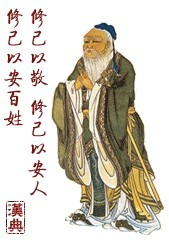

靜气------人生不可缺的修养
#1 靜气------人生不可缺的修养 作者：蓝天蓝 发表时间：2011-8-8 7:13:31
靜气------人生不可缺的修养

心静自神闲，灵空蕴意沉。
淡眸天下物，大道始归真。
不是等待，而是一种积极平和的心态，
是冷静观察刻苦思索的过程，
是镇定自如沉着应对的意志，
是从容不迫永不言败的信念。
#2 Re:靜气------人生不可缺的修养 作者：梧桐风 发表时间：2011-8-8 16:54:35
看着沙发没人占，我不忍心了#3 Re:靜气------人生不可缺的修养 作者：被感动的人 发表时间：2011-8-9 0:33:32

［此帖子已被 被感动的人 在 2011-8-9 0:34:54 编辑过］
#4 Re:靜气------人生不可缺的修养 作者：蓝天蓝 发表时间：2011-8-9 0:35:18
下次我自己占